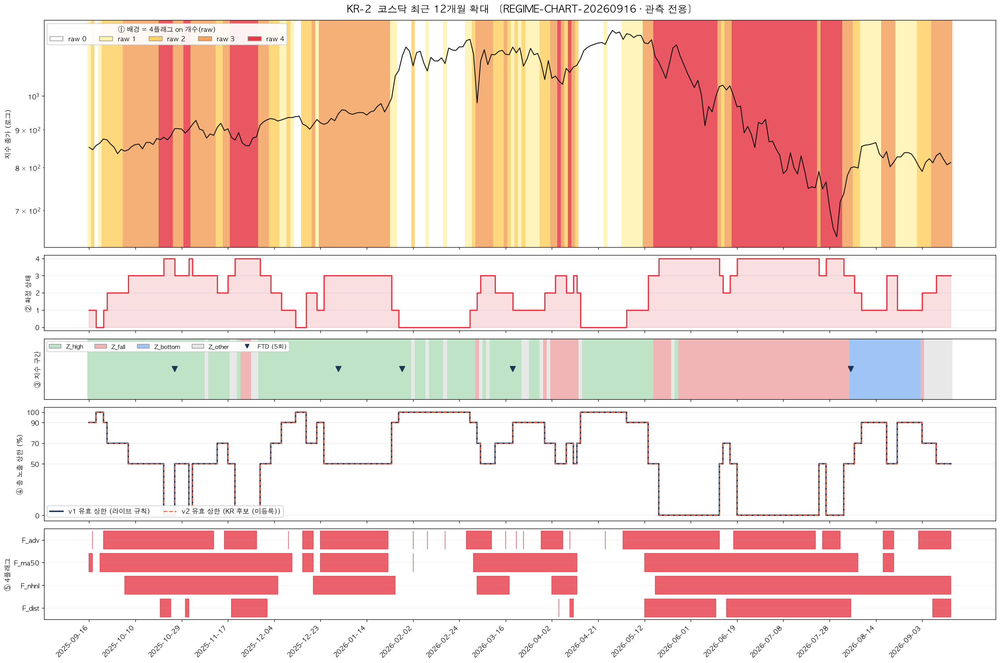
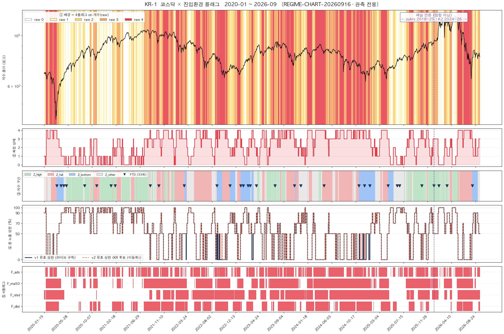

🧭 진입환경 게이트 — 국장(KOSPI·KOSDAQ)소급 산출
기준 세션 2026-09-15 · 생성 2026-09-16 10:19 KST
라이브 2026-09-18 예정 — 현재 값은 소급 산출입니다.
① 현재 상태
확정 상태 3 / 4
raw (오늘 켜진 플래그 수)코스피 3 · 코스닥 3 → 낮은 쪽 3
총 노출 상한50%
신규 진입 사이즈 배율50%
현재 노출률87.92%
오늘 차단·축소기록 없음
상태 변경일2026-09-15
지수 구간 (관측)Z_other · 52주 고점 대비 -33.74% · 20세션 내 FTD 없음
② 4플래그 원값
| 플래그 | 문턱 | 코스피 값 | | 코스닥 값 | |
|---|
| F_dist | 지수 분배일 25일 내 ≥5 | 5.0000 | ON | 6.0000 | ON |
| F_nhnl | 52주 신고−신저 10일 합 < 0 | -77.0000 | ON | -451.0000 | ON |
| F_ma50 | MA50 상회 비율 < 50% | 55.4753 | off | 56.4841 | off |
| F_adv | 상승비율 10일 EMA < 0.50 | 0.4471 | ON | 0.4692 | ON |
코스피와 코스닥을 각각 세고 둘 중 작은 값을 씁니다 — 둘 다 나쁠 때만 진짜 하락장으로 봅니다.
참고(통합 방식): raw 3 · 확정 3
③ 최근 20세션
| 날짜 | KS | KQ | raw | 확정 | 상한 | 차단 |
|---|
| 2026-08-19 | 2 | 3 | 2 | 0 | 100% | — |
| 2026-08-20 | 1 | 3 | 1 | 1 | 90% | — |
| 2026-08-21 | 3 | 3 | 3 | 1 | 90% | — |
| 2026-08-24 | 3 | 3 | 3 | 3 | 50% | — |
| 2026-08-25 | 1 | 2 | 1 | 1 | 90% | — |
| 2026-08-26 | 1 | 1 | 1 | 1 | 90% | — |
| 2026-08-27 | 1 | 1 | 1 | 1 | 90% | — |
| 2026-08-28 | 1 | 1 | 1 | 1 | 90% | — |
| 2026-08-31 | 1 | 1 | 1 | 1 | 90% | — |
| 2026-09-01 | 1 | 2 | 1 | 1 | 90% | — |
| 2026-09-02 | 2 | 2 | 2 | 1 | 90% | — |
| 2026-09-03 | 2 | 2 | 2 | 2 | 70% | — |
| 2026-09-04 | 0 | 2 | 0 | 0 | 100% | — |
| 2026-09-07 | 0 | 2 | 0 | 0 | 100% | — |
| 2026-09-08 | 2 | 3 | 2 | 0 | 100% | — |
| 2026-09-09 | 2 | 3 | 2 | 2 | 70% | — |
| 2026-09-10 | 2 | 3 | 2 | 2 | 70% | — |
| 2026-09-11 | 2 | 3 | 2 | 2 | 70% | — |
| 2026-09-14 | 3 | 3 | 3 | 2 | 70% | — |
| 2026-09-15 | 3 | 3 | 3 | 3 | 50% | — |
④ 차트

최근 12개월 — 지수·플래그 개수·확정 상태·지수 구간·개별 플래그(일일 갱신)

2020년 이후 장기. 세로 점선은 데이터 패널이 바뀌는 지점으로, 이어 붙인 것이 아니라 전환 지점입니다.
⑤ 차단·축소 로그
아직 기록이 없습니다. 게이트가 신규 진입을 실제로 막거나 줄인 순간부터 쌓입니다.
⑥ 예정 항목 (아직 매매에 쓰이지 않음)
| 항목 | 상태 |
|---|
| 바닥권 완화 (하락 15% 이상 + 회복 신호일 때 4/4를 50%로) | 관측 예정 |
| AI 판정층 (악화 시 한 단계 상향 / 바닥권 조기 해제) | 관측 예정 |
| 개선 2일 확인 변형 | 관측 예정 |
| 통합 방식 참고 열 | 기록 중 |
위 항목은 기록만 하며 실제 매매 동작은 현재 규칙 그대로입니다.
⑦ 이 지표가 무엇인가